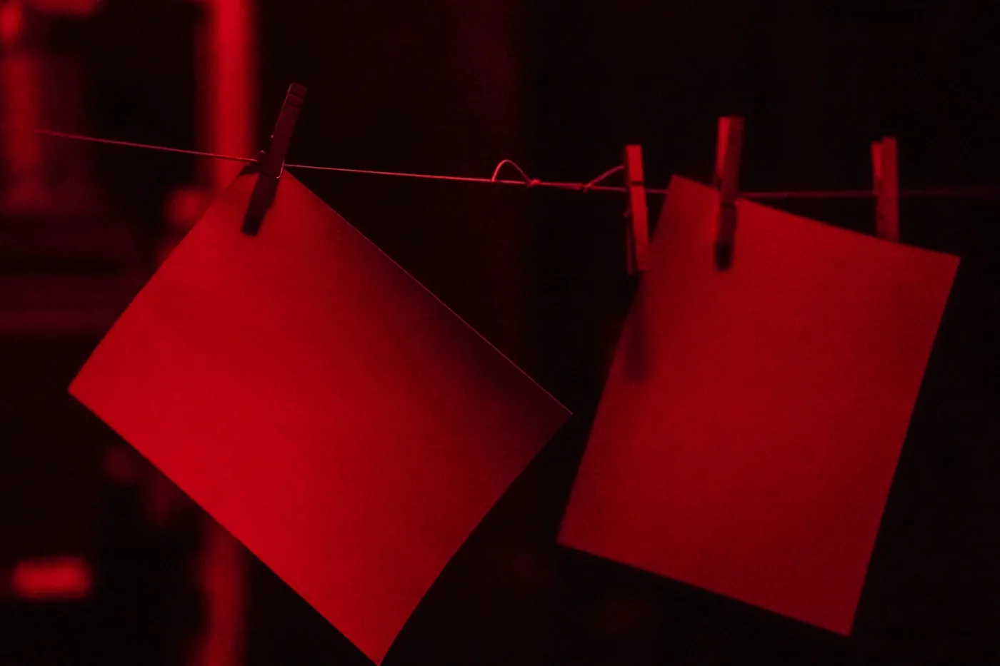
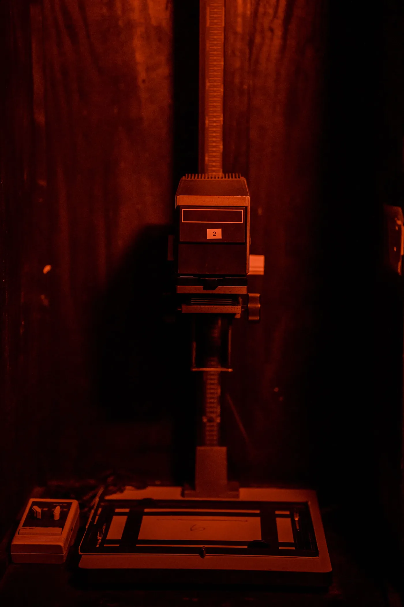
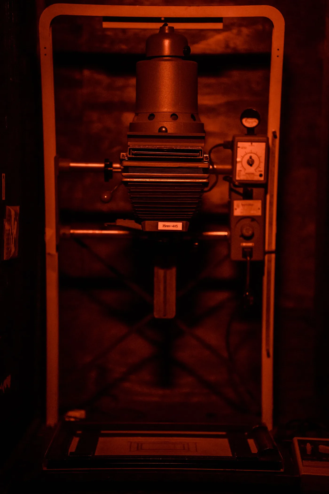
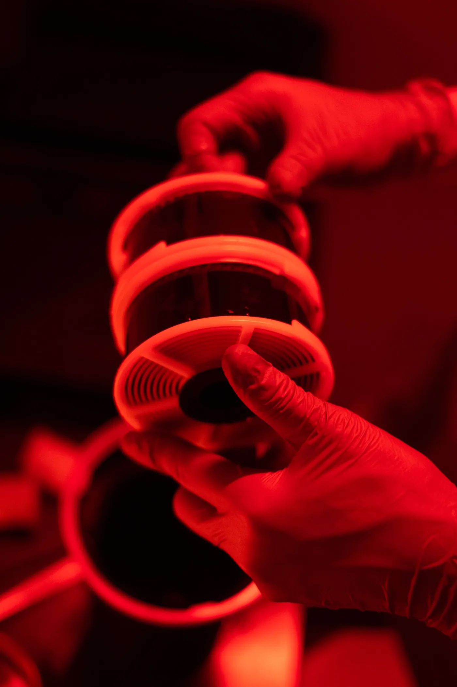
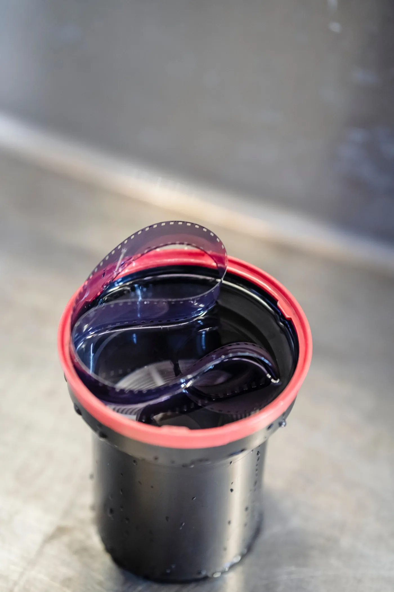
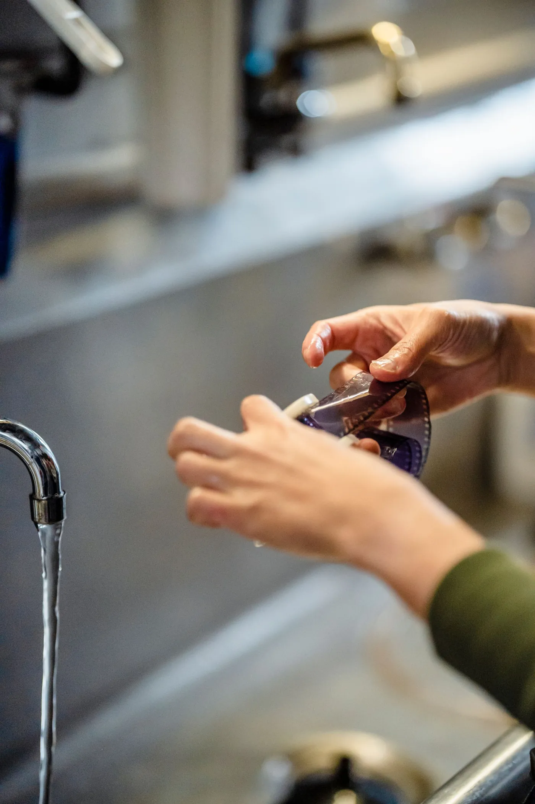
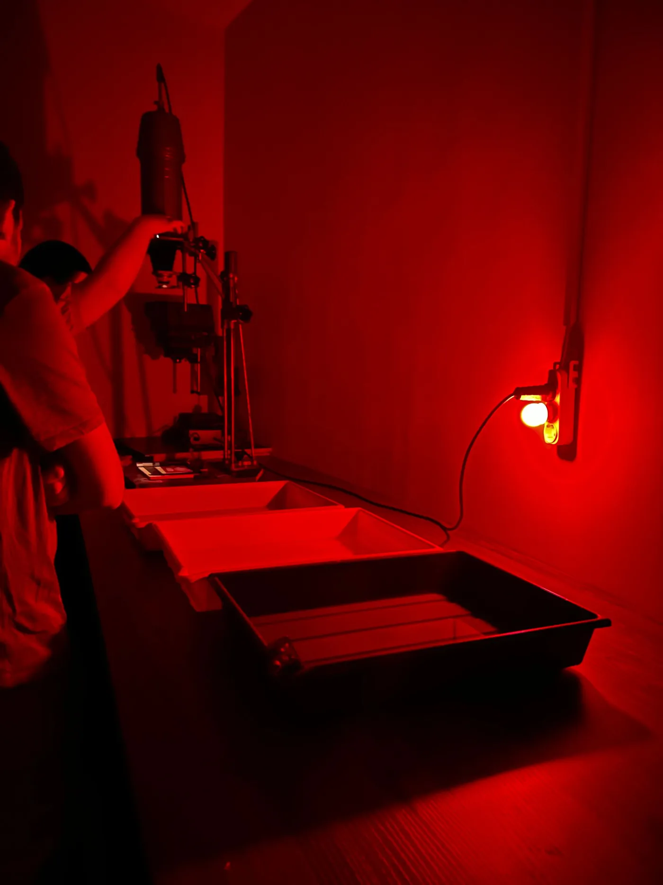

Bay 3 · Durst M605 · 10×8 in RC glossy
It’s on the paper.
You just can’t see it yet.
Set a time, expose, develop. Lights on only once it’s fixed.
There’s a negative in the carrier and a sheet on the easel. Set a time, press Expose, then put it in the developer. Keep your hand in the light to hold a part back. Don’t turn the lights on until it’s fixed.
With the hand tool set to dodge or burn, move the pointer over the easel, or focus it and use the arrow keys, to hold light back or let it through.
- Expose
- Develop 60 s
- Stop + fix 40 s
- Lights
Red filter under the lens: frame 14 is on the easel and the paper can’t see it. Set a time and press Expose.
3 stops · grade 2
Timer 8.0 seconds, grade 2.
The bench runs faster than the room: the lamp at 2×, the trays at 6×. The times it shows are real darkroom seconds.
Tonight’s line
What the sheet just did
Seconds go in. Density comes out.
Paper doesn’t record light in a straight line. It ignores a little, then answers fast, then runs out of black. Each Multigrade filter bends that curve. Grade 00 stretches it across a wide range of light, and grade 5 squeezes it into a narrow one. A flat negative wants a hard grade and a contrasty one wants a soft grade. You only find out which by printing.
We count in stops, not seconds. A third of a stop is 26% more light, and a whole stop is double. That’s why the timer on bay 3 jumps from 8.0 to 10.1 to 12.7 and not in tidy seconds. Every step looks the same size on the print.
On grade 2 at 8.0 s, frame 14’s brightest detail lands at density 0.12 and its darkest textured shadow at 1.35. The paper runs from 0.06 to 2.05.
| Grade | Exposure range it accepts | Time | Light on the easel |
|---|---|---|---|
| 00 | 1.70 log units | ×1 | yellow |
| 0 | 1.50 log units | ×1 | yellow |
| 1 | 1.30 log units | ×1 | pale amber |
| 2 | 1.10 log units | ×1 | near white |
| 3 | 0.90 log units | ×1 | pink |
| 4 | 0.70 log units | ×2 | magenta |
| 5 | 0.55 log units | ×2 | magenta |
Grades 00 to 3 print at the same time. Put the 4 or the 5 in and double it, or the print comes out a stop light. That’s the most common first-night mistake on the bench.



Hire a bay
Six bays, one rule about the door.
Bays 1 to 4 are Durst M605s with colour heads dialled for Multigrade, for 35 mm to 6×6. Bays 5 and 6 are Laborator 1200s and take up to 4×5. Every bay has an f-stop timer, a grain focuser and a four-blade easel. Chemistry is mixed fresh on Mondays and it’s included.
| Bench | When | Price |
|---|---|---|
| By the hour | Tue–Fri | S$16 |
| By the hour | Sat–Sun | S$20 |
| Three-hour block | any day | S$42 |
| Night bench, 7–11 pm | Tue–Fri | S$50 |
| Membership, 10 hours | per month | S$110 |
| RC glossy, 10×8 in | S$1.60 a sheet |
|---|---|
| Fibre, 10×8 in | S$3.40 a sheet |
| Or bring your own | no charge |
The door: the light-trap door stays shut when anyone’s paper is out of the box. Knock twice and wait for someone to call “clear”. It’s saved more sheets than any other rule we have.
First time on a bench? Do a Saturday First Print class once, or show whoever’s on shift that you can load a carrier and run a test strip. After that the bay’s yours.
Book a bench by emailFilm
Drop it off Tuesday. Pick it up Friday with a contact sheet.
We develop black-and-white 35 mm and 120 by hand in steel tanks, a few rolls at a time, using the maker’s own times at 20 °C. Every roll comes back sleeved with a contact sheet printed on 10×8. Mark it up with the red pencil on the counter and book a bench to print the ones you ringed.
- 11
- 12
- 13
- 14print
- 19
- 20
- 21
- 22yes
- 28
- 29
- 30
- 31burn sign



| Service | Price |
|---|---|
| Develop, 35 mm or 120, black and white | S$14 a roll |
| Push or pull, up to two stops | +S$4 |
| Contact sheet, 10×8 RC | included |
| Flat scans, 16 MP, every frame | S$10 a roll |
| Tank bench, develop your own | S$8 an hour |
Drop off by 8 pm Tuesday and collect from 2 pm Friday. Colour film goes out to a lab we trust and takes a week longer. We’ll tell you which one.
Classes
Four people, one room, three hours.
Classes run small because the room is small. Bring a roll of negatives or use ours. Everyone leaves with finished prints, dry and flat.
-
· 10:00–13:00
First Print
Load a carrier, focus, run a test strip, read it, make a straight print. Twenty sheets of 10×8 RC included, and you go home with two prints.
-
· 14:00–17:30
Split-grade and dodging
Two exposures on one sheet, one soft and one hard, and a card, a wire and your hands to push the light around. Bring a negative that has beaten you.
-
· 10:00–13:00
First Print
Same class as the 3rd, for anyone who missed it.
-
· 10:00–16:00
Fibre paper and selenium
Fibre-based paper, a long wash and a selenium bath that makes the blacks go deeper and slightly cold. It’s a full day, and lunch from the coffee shop downstairs is on us.

Visit
Up the side stairs, past the hardware shop.
Level 2, 118 Jalan BesarSingapore 208848
Four minutes from Jalan Besar MRT, Exit A
- Tue–Fri
- 2 pm – 11 pm
- Sat–Sun
- 10 am – 10 pm
- Mon
- Closed. We mix chemistry and clean the trays.
In the room
- Phones go face down on the shelf by the door. A lit screen fogs paper faster than our safelights do.
- We test the safelights every month. Paper is safe under them for four minutes on the bench and not much longer.
- Tongs stay with their tray: developer, stop, fix. One drop of fixer in the developer and everyone’s night goes grey.